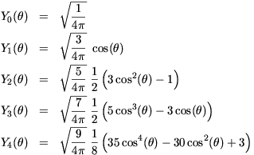
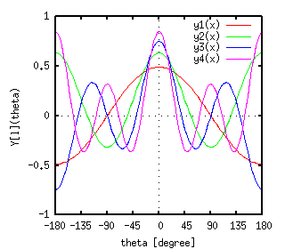
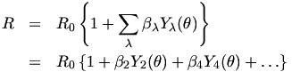
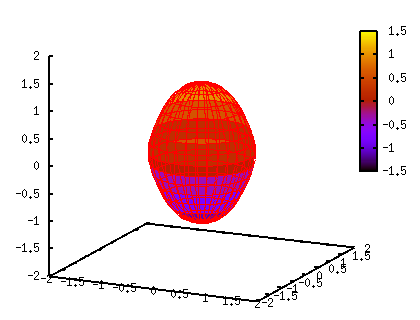
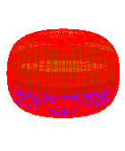
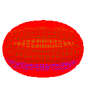
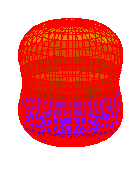
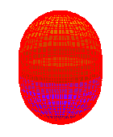
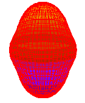

<!DOCTYPE HTML PUBLIC "-//W3C//DTD HTML 4.01 Transitional//EN">
<html lang="ja">
<head>
<title> gnuplot / spherical_harmonics / deformed </title>
<!-- Generated 2004/2/19-->
<!-- $Id: deformed.html,v 1.6 2005/11/20 08:04:49 kawano Exp $ -->
<meta http-equiv="content-type" content="text/html;charset=iso-2022-jp">
<link rel="stylesheet" href="../style-new.css" type="text/css">
</head>
<body>

<table width="100%" border="0" cellpadding="0" cellspacing="0">
<tr><td bgcolor="#cccc90" width="320">
    <div align="left">
    <a href="../index.html">
    
    </a></div></td>
    <td bgcolor="#cccc90">
      <div align="center"><h3> - not so Frequently Asked Questions - </h3> </div>
      <div class="update"> update 2005/11/19 </div>
    </td>
</tr>
<tr><td bgcolor="#fae8ba"></td>
    <td bgcolor="#fae8ba"><div class="navi"> 
<a href="../index.html">          HOME </a> |
<a href="../intro/index.html">    INTRODUCTION </a> |
<a href="../general.html">        INFORMATION </a> |
<a href="../gallery/index.html">  GALLERY </a> |
<a href="deformed-e.html">        ENGLISH </a>
</div></td></tr>
</table>
<hr class="topsep">


<table width="100%" border="0" cellpadding="0" cellspacing="0">
<tr><td id="menu">
 <p> <a href="index.html">   $B5eLLD4OB4X?t(B  </a></p>

 <ul>
  <li><a href="parametric.html"> $BG^2pJQ?tI=<((B </a>
  <li><a href="spharm1.html">    $B5eLLD4OB4X?t(B </a>
  <li><a href="spharm2.html">    $B<o!9$NNL;R?t(B </a>
  <li><a href="deformed.html">   $BJQ7A$7$?86;R3K(B </a>
      <a href="../version.html"><b>[ver.4]</b></a>
</ul>

<td id="content">

<h1><a name="top"> $BJQ7A$7$?86;R3K(B (Legendre$BE83+(B) </a></h1>
<p class="newver"> [ver.4] ONLY ! </p>


<p> $B5eLLD4OB4X?t(B Y[lm]($B&H(B,$B&U(B) $B$G!$FC$K(Bm=0$B$N>l9g$O!$DL>o$N(BLegendre$B4X?t(B 
     P[l](cos($B&H(B)) $B$NDj?tG\$H$J$j!$$3$l$O&U$K0MB8$7$J$$<B4X?t$G$9!%4v$D(B
     $B$+$N(B l $B$KBP$9$k(BY[l]($B&H(B)$B$r<($7$^$9!%(B</p>

<div align="center">


</div>

<p> $BJQ7A$7$?86;R3K$N7A>u$O!$$3$N(BY[l]($B&H(B)$B$N6v?t$N(B(l=$B&K(B)$B$N9`$rMQ$$$F<!$N$h$&$K(B
     $BE83+$9$k;v$,$G$-$^$9!%(B</p>


<div align="center"></div>

<p> $B$3$3$G&B$OJQ7A$NEY9g$rI=$9%Q%i%a!<%?$G$9!%&B(B=0$B$J$i5e7A$H$J$j$^$9!%$3(B
     $B$N<0$GI=$5$l$k(B3 $B<!857A>u$r(Bgnuplot$B$GI=<($7$F$_$^$9!%(B<a
     href="spharm1.html">$BA0@a(B</a>$B$G$HF1MM!$6u4V:BI8(B(x,y,z)$B$r3QEY(B
     <i>u,v</i>$B$HF07B(B<i>r</i>$B$rMQ$$$FI=$7$^$9!%(B</p>

<pre>
   x = R(theta)*cos(u)*cos(v)
   y = R(theta)*sin(u)*cos(v)
   z = R(theta)*sin(v)
</pre>

<p> $B$3$3$G&H(B(=theta)$B$O(BZ$B<4$+$i7W$C$?F07B$N3QEY$J$N$G!$&H(B=$B&P(B/2-v $B$G(B<i>v</i>$B$H(B
     $B4X78$E$1$i$l$^$9!%%Q%i%a!<%?$G$3$N6JLL$rI=8=$9$k$K$O!$(Bu$B$H(Bv$B$r(B0$B$+$i(B360
     $B$^$GJQ2=$5$;$^$9!%0J2<$NNc$G$O&B(B2=0.3, $B&B(B4=0.1$B$N>l9g$r<($7$F$$$^$9!%$^$?(B
     R0=1$B$H$7$F$$$^$9!%(B</p>

<pre class="sample">
gnuplot&gt; set parametric

        dummy variable is t for curves, u/v for surfaces
gnuplot&gt; set angle degree
gnuplot&gt; set urange [0:360]
gnuplot&gt; set vrange [0:360]
gnuplot&gt; set isosample 16,16
gnuplot&gt; set ticslevel 0
gnuplot&gt; set view 75,25
gnuplot&gt; set size 0.7,1.0
gnuplot&gt; set xrange [-2:2]
gnuplot&gt; set yrange [-2:2]
gnuplot&gt; set zrange [-2:2]
gnuplot&gt; set urange [0:360]
gnuplot&gt; set vrange [0:360]
gnuplot&gt; y0(t)=1.0
gnuplot&gt; y2(t)=sqrt(5.0/(4*pi))*( 3.0*cos(t)**2 -  1.0             )/2.0
gnuplot&gt; y4(t)=sqrt(9.0/(4*pi))*(35.0*cos(t)**4 - 30*cos(t)**2 +3.0)/8.0
gnuplot&gt; b2=0.3
gnuplot&gt; b4=0.1
gnuplot&gt; r(t) = 1 + b2*y2(0.5*pi-t) + b4*y4(0.5*pi-t)
gnuplot&gt; fx(u,v)=cos(u)*cos(v)
gnuplot&gt; fy(u,v)=sin(u)*cos(v)
gnuplot&gt; fz(v)=sin(v)
gnuplot&gt; set pm3d
gnuplot&gt; splot r(v)*fx(u,v),r(v)*fy(u,v),r(v)*fz(v) with lines
</pre>

<div align="center"></div>

<p> $B&B(B2$B$H&B(B4$B$NCM$O@5Ii$r<h$k;v$,$G$-$^$9!%&B(B2=-0.4 $B$H(B 0.4 $B$KBP$7$F!$&B(B4
     $B$r(B -0.2 $B$+$i(B 0.2 $B$^$GJQ2=$5$;$F86;R3K$N7A>u$rI=<($7$F$_$^$9!%&B(B2&gt;0
     $B$N>l9g!$86;R3K$O=D$KD9$$2sE>BJ1_BN$H$J$j!$%W%m%l!<%H7?$H8F$P$l$^$9!%(B
     $B&B(B2&lt;0$B$G$OJPJ?$J7A$G!$%*%V%l!<%H7?$H8F$P$l$^$9!%(B</p>

<pre class="sample">
gnuplot&gt; set border 0
gnuplot&gt; unset xtics
gnuplot&gt; unset ytics
gnuplot&gt; unset ztics
gnuplot&gt; unset colorbox
gnuplot&gt; b2 = -0.4 ; b4 = -0.2 ; replot ; pause -1
gnuplot&gt; b2 = -0.4 ; b4 =  0.0 ; replot ; pause -1
gnuplot&gt; b2 = -0.4 ; b4 =  0.2 ; replot ; pause -1
gnuplot&gt; b2 =  0.4 ; b4 = -0.2 ; replot ; pause -1
gnuplot&gt; b2 =  0.4 ; b4 =  0.0 ; replot ; pause -1
gnuplot&gt; b2 =  0.4 ; b4 =  0.2 ; replot ; pause -1
</pre>
<br>
<div align="center"><table border="0">
<tr><th>            </th> <th> $B&B(B4 = -0.2 </th>
                          <th> $B&B(B4 =  0   </th>
                          <th> $B&B(B4 =  0.2 </th> </tr>
<tr><th> $B&B(B2 = -0.4 </th> 
    <td> </td>
    <td> </td>
    <td> </td></tr>
<tr><th> $B&B(B2 =  0.4 </th> 
    <td> </td>
    <td> </td>
    <td> </td></tr>
</table></div>


<div class="top"><a href="deformed.html#top"></a></div>
</td></tr></table>
<hr class="topsep">


</body>
</html>

